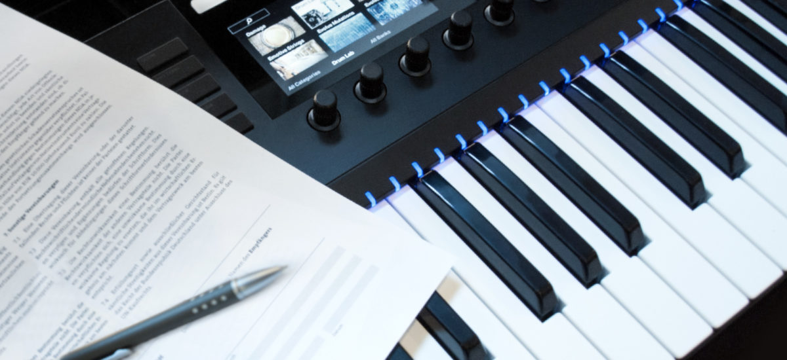

Everything you wanted to know about Music Publishing
{kind=link}

Your music can be published in many different ways. Whether your track is available as an MP3, sold on vinyl in a record store, streamed digitally on Spotify, featured in a television soundtrack, or played by a DJ at a festival, these can all be monetized through publishing rights. So, if you’re planning to release your records, you don’t just need to think about distribution and contracts. You’ll also need to get to grips with the structure of music publishing.
Basically, this is all about the ownership (and copyright) that you hold over the music you write, rather than the recorded tracks themselves. This legal know-how can have a great effect on the different ways that you can generate income for yourself as a musician through ownership of copyright. Generally, these rights will be dealt with by a music publisher, who will ensure that you receive payment for the music you have written when it is performed in public, online, on the radio, or copied for distribution. This is generated through Performing and Mechanical Rights, distinct from the income generated from the Master Rights which you sign over to a record label.
While music publishing is more important than ever in the digital and streaming era, it’s also often misunderstood, even by experienced producers. Philip Mortlock, creative director and owner of ORiGiN Music Publishing with a 20-year career in music publishing, emphasizes the importance of understanding can offer artists. “I do believe that a knowledge gap exists, and that songwriters need to know more about what music publishing and what copyright protection is all about,” he says. “To know what copyright protection is, and the ways and means to gain income from the activity and exploitation of original music, is something that is definitely empowering for a young musician. If you don’t learn how to engage with the systems in place to register your new works and protect your copyright, you then lose the opportunity to benefit from an industry that is full of prospects.”
Know your (Copy)rights
“A helpful way to understand music publishing is to view it as ‘copyright management’,’” says Mortlock. Music copyright can be understood as a form of intellectual property, similar to a patent or trademark, which is granted to your music once it has been either recorded or written down. The copyright on your track covers the right to reproduce, distribute or perform the tracks, as well as creating derivative works.
How you can get paid
There are a number of important ways that you can generate income from the copyright you hold on your music. The most traditional form is known as mechanical royalties: the revenue that comes from the reproduction of your music on physical formats like CDs and vinyl, as well as digital formats like MP3s and WAVs.
Another important category is known as performance royalties which covers the income generated when your music is performed in public, including plays on radio and television, as well as digital streaming services . This category also includes plays and performances in live venues.
Another way your music can be “published” can be under a synchronization license. Otherwise referred to as a ‘sync’, this means when your track is used as a soundtrack for something like an advert, TV show, movie, video game, YouTube content, or anything else.
Mortlock points to streaming platforms like Spotify as the biggest source of growth at the moment. “While the rate of income is viewed as very low, it’s in the process of becoming the mainstream way that music is consumed,” he says. “We are going through a massive change of how we both to listen to music, as well as how income is earned from music. Personally I do believe it is a new frontier, and very exciting. We all want music to be heard, and this is a clear and direct new path that allows this to happen.”
How do I manage the copyright on my tracks?
The most important step for managing your music copyright is to register with a performing rights organization (PRO), a body that will help ensure that you are paid for the use of your music, and will collect royalties on your behalf. Whether your track was played on the radio, dropped by a DJ in a club or featured in an TV advert, it’s the job of the PRO to make sure that you are paid royalties for it.
Each country has its own PRO, and all of them are linked internationally and cooperate via a reciprocal arrangement. If you are based in the United States, there are four major organizations that include SESAC, ASCAP, BMI as well as GMR for established artists. In the UK the most important organisation is PRS, in Germany it’s GEMA, while in Australia the main organization is APRA.
When it comes to managing the copyright on your tracks, you have two options. You can either join the PRO yourself and take responsibility for managing your own copyright, or you can instead secure the services of a professional publishing house to manage it for you, and let them join the PRO on your behalf.
UK DJ/producer Simon Huxtable recently began his own record label ASTIR Recordings, and decided to go down the path of procuring the services of a publishing house to help him manage copyright for his new project.
“I’ve signed my label to a publishing deal with a company called Black Rock, mostly because I know the owners and I trust them. But there are any number of other firms who can take you on. The trick here, as with everything, is to research like mad and make lots of enquiries.”
What to watch out for? The industry speaks
Mark Lawrence is CEO for the Association for Electronic Music (AFEM), a trade association representing the interests of the club music industry, and has been a longtime supporter of musicians paying closer attention to publishing.
“Many electronic music producers actually don’t realise they are songwriters. As soon as you understand this, it opens the door for you to get paid for things you won’t get money from a label for. It’s important to understand that anchor point from the beginning, because there is a whole machine there waiting for you. And in some instances, that machine can pay more than a label ever would.”
“As a songwriter, you should join a Performing Rights Organisation to earn royalties from your songs, and also work a good publisher to help maximise your revenue. Always make sure all of your tracks are registered prior to release, and that all writer shares are agreed to before a track is pitched to label.”
“Finally, you should work towards having a trusted team around you who have experience in contracts, rights, publishing, deals, agents and so forth. Learn the ins and outs of the industry before you get a manager, so that you can form a partnership with the right manager when you find them. There is money to be made in this industry, but you have to cover all the bases, rather than wait for a lucky break.”
Alex Drewniak runs the Stockholm-based management company BC DGTL, which works with artists like Jeremy Olander. He also runs Olander’s Vivrant label, and was involved with negotiating a major label publishing deal for Olander with Warner/Chappell in the US. He’s also managed artists that had pre-existing publishing deals, which he says were signed without the artist’s understanding the finer details. Drewniak advises caution and due diligence when signing on the dotted line with a publishing house.
“My best advice is to not be blinded by the money dangled in front of you by a publisher A&R,” he says. “If you’ve had moderate success as a producer or songwriter and you’re on the cusp of establishing yourself, you might get an email from an A&R. I would advise you to resist the temptation. While it’s flattering and might put a little money in your pocket, know that there is very little value, if any, which a publisher can give you in exchange for what you give up. They might tell you your music is in-demand from the people who decide what music goes in the big commercials, or that it’s close to impossible for you to collect all your royalties in the small countries that have obscure streaming services. This is not true.
“In the same way the distribution of music has been democratised over the past 15 years, so has the ability to administer your own catalogue. Services such as CD Baby, Songtrust and Tunecore, which started out as simple distributors, also now offer administration agreements to artists that allow 100 percent of copyright to be retained, instead of the typical co-publishing agreements that are also standard with major labels. While you don’t get an advance with an administration deal, you also don’t sign off any copyright, and it offers the same kind of royalty collection a major publisher provides.”
When it comes to getting your music synced in advertisements and beyond, Drewniak emphasises that this is something that you can also take control of yourself. “Tell your manager to get scrappy. Meet with production companies, ad agencies and everything in-between and place the music yourself. It takes work, but it will make you more money than signing with a major and waiting around to be in the next Pepsi commercial.”